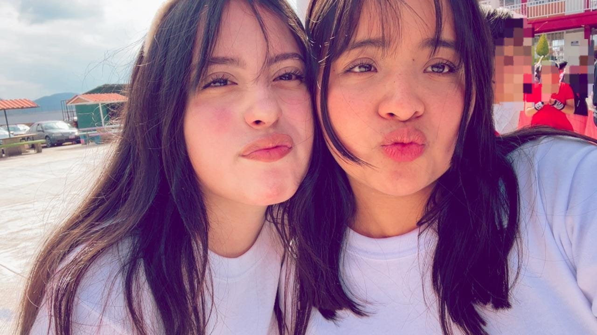

Hola, bienvenidos a nuestra primer pagina web! Somos Esme y Joce. :)

| ESME | JOCE | ||
| CUALIDADES | DEFECTOS | CUALIDADES | DEFECTOS |
| Creativa | Procastinadora | Optimista | Indescisa |
| Positiva | Distraida | Independiente | Sensible |
| Empática | Impuntual | Motivadora | Orgullosa |
| Confiable | Sensible | Afectuosa | Distraida |
| Alegre | Panico escenico | Generosa | Desordenada |
| Sincera | Miedo al fracaso | Amable | Irritable |
Soy Esme! Me encanta darle un toque especial a todo lo que hago, especialmente si tiene un poco de brillo. Tengo un cariño enorme por los perritos y disfruto mucho de las cosas que me hacen sentir feliz y cómoda. Mi familia ocupa un lugar muy importante en mi vida; vivo con mi papá y mi hermano, y entre nosotros existe una relación muy cercana, nos queremos mucho y solemos apoyarnos en todo. A veces puedo dejar algunas cosas para después, distraerme fácilmente o llegar un poco tarde. También suelo tomarme las cosas muy a pecho y, cuando siento que algo puede salir mal, puedo ponerme nerviosa o preocuparme demasiado. Aun así, trato de mantener una buena actitud, disfrutar lo que tengo y seguir adelante, especialmente cuando cuento con el apoyo de las personas que quiero.
Soy Joce! Vivo con mi familia, mis padres y hermanos. De igual manera con mis mascotas, dos gatitas y dos perros, ellos son muy lindos, los quiero tanto. Soy una persona sensible, alegre y curiosa. Me gusta reír, convivir y disfrutar de los pequeños momentos, aunque también suelo pensar mucho las cosas y pensar dos veces antes de tomar decisiones. Me gusta escuchar y recibir opiniones de las personas importantes para mí. Tengo un carácter fuerte y soy bastante expresiva con lo que siento; puedo enojarme o frustrarme fácilmente, pero también trato de reflexionar y aprender de cada situación. En general, quiero continuar mejorando, en el ambito personal, emocional y academico.